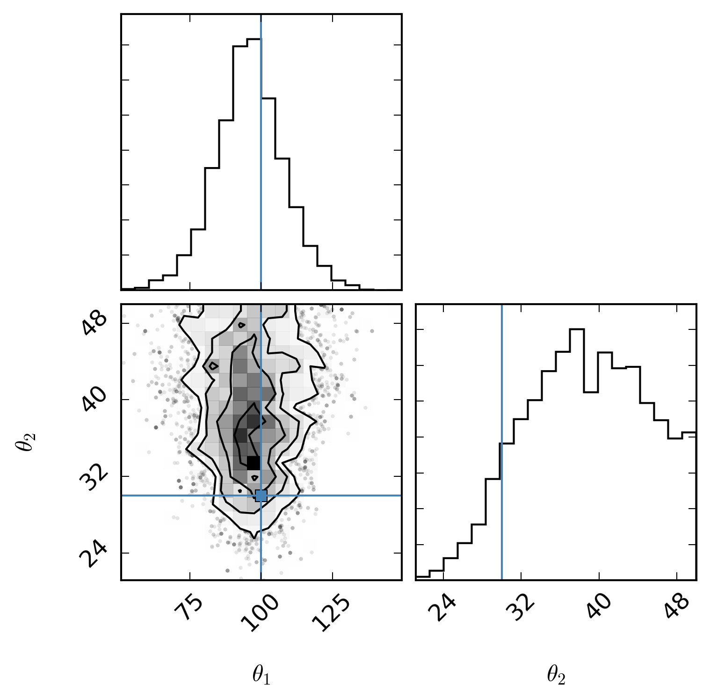
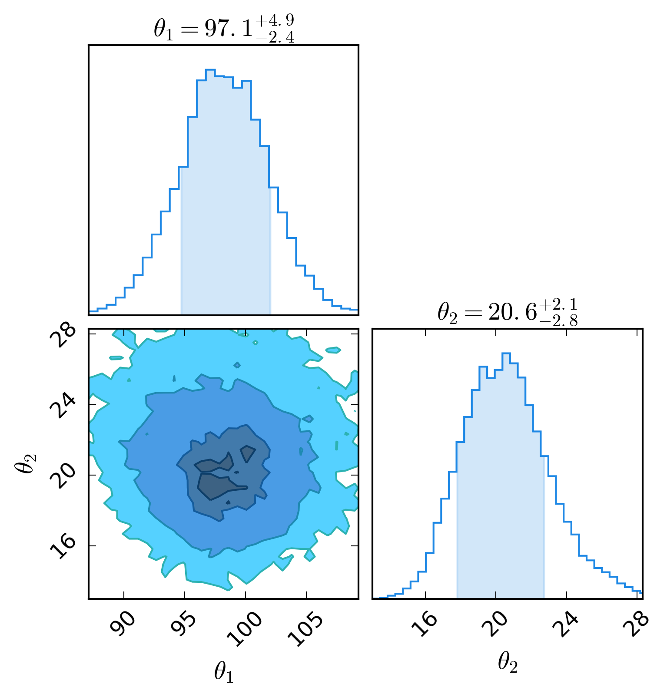

dessn.simple package¶
This module is designed to give a step by step overview of a very simplified example Bayesian model.
The basic example model is laid out in the parent class Example,
and there are three implementations. The first implementation, ExampleIntegral, shows
how the problem might be approached in a simple model, where numerical integration is simply done
as part of the likelihood calculation.
However, if there are multiple latent parameters, we get polynomial growth of the number of numerical integrations we have to do, and so this does not scale well at all.
This leads us to the implementation in ExampleLatent, where we use the MCMC algorithm to
essentially do Monte Carlo integration via marginalisation. This means we do not need to perform
the numerical integration in the likelihood calculation, however the cost of doing so is increase
dimensionality of our MCMC.
Finally, the ExampleModel implementation shows how the ExampleLatent class
might be written to make use of Nodes. This is done in preparation for more complicated models, which will
have more than one layer and needs to be configurable.
Submodules¶
dessn.simple.example module¶
-
class
dessn.simple.example.Example(n=30, theta_1=100.0, theta_2=20.0)[source]¶ Bases:
objectSetting up the math for some examples.
Let us assume that we are observing supernova that are drawn from an underlying supernova distribution parameterised by \(\theta\), where the supernova itself simply a luminosity \(L\). We measure the luminosity of multiple supernovas, giving us an array of measurements \(D\). If we wish to recover the underlying distribution of supernovas from our measurements, we wish to find \(P(\theta|D)\), which is given by
\[P(\theta|D) \propto P(D|\theta)P(\theta)\]Note that in the above equation, we realise that \(P(D|L) = \prod_{i=1}^N P(D_i|L_i)\) as our measurements are independent. The likelihood \(P(D|\theta)\) is given by
\[P(D|\theta) = \prod_{i=1}^N \int_{-\infty}^\infty P(D_i|L_i) P(L_i|\theta) dL_i\]We now have two distributions to characterise. Let us assume both are gaussian, that is our observed luminosity \(x_i\) has gaussian error \(\sigma_i\) from the actual supernova luminosity, and the supernova luminosity is drawn from an underlying gaussian distribution parameterised by \(\theta\).
\[P(D_i|L_i) = \frac{1}{\sqrt{2\pi}\sigma_i}\exp\left(-\frac{(x_i-L_i)^2}{2\sigma_i^2}\right)\]\[P(L_i|\theta) = \frac{1}{\sqrt{2\pi}\theta_2}\exp\left(-\frac{(L_i-\theta_1)^2}{2\theta_2^2}\right)\]This gives us a likelihood of
\[P(D|\theta) = \prod_{i=1}^N \frac{1}{2\pi \theta_2 \sigma_i} \int_{-\infty}^\infty \exp\left(-\frac{(x_i-L_i)^2}{2\sigma_i^2} -\frac{(L_i-\theta_1)^2}{2\theta_2^2} \right) dL_i\]Working in log space for as much as possible will assist in numerical precision, so we can rewrite this as
\[\log\left(P(D|\theta)\right) = \sum_{i=1}^N \left[ \log\left( \int_{-\infty}^\infty \exp\left(-\frac{(x_i-L_i)^2}{2\sigma_i^2} - \frac{(L_i-\theta_1)^2}{2\theta_2^2} \right) dL_i \right) -\log(2\pi\theta_2\sigma_i) \right]\]Parameters: n : int, optional
The number of supernova to ‘observe’
theta_1 : float, optional
The mean of the underlying supernova luminosity distribution
theta_2 : float, optional
The standard deviation of the underlying supernova luminosity distribution
-
do_emcee(nwalkers=None, nburn=None, nsteps=None)[source]¶ Abstract method to configure the emcee parameters
-
get_posterior(theta, data, error)[source]¶ Gives the log posterior probability given the supplied input parameters.
Parameters: theta : array of model parameters
data : array of length n
An array of observed luminosities
error : array of length n
An array of observed luminosity errors
Returns: float
the log posterior probability
-
dessn.simple.exampleIntegral module¶
-
class
dessn.simple.exampleIntegral.ExampleIntegral(n=10, theta_1=100.0, theta_2=30.0)[source]¶ Bases:
dessn.simple.example.ExampleAn example implementation using integration over a latent parameter.
Building off the math from
ExampleCreating this class will set up observations from an underlying distribution. Invokeemceeby calling the object. In this example, we perform the marginalisation inside the likelihood calculation, which gives us dimensionality only of two (the length of the \(\theta\) array). However, this is at the expense of performing the marginalisation over \(dL_i\), as this requires computing \(n\) integrals for each step in the MCMC.Note that I believe my numerical integration is not working properly, hence the weird output results. The moral of the story - it takes far, far longer to run than any other way of doing it, should still be the take home message from this.
Parameters: n : int, optional
The number of supernova to ‘observe’
theta_1 : float, optional
The mean of the underlying supernova luminosity distribution
theta_2 : float, optional
The standard deviation of the underlying supernova luminosity distribution
-
do_emcee(nwalkers=16, nburn=500, nsteps=1000)[source]¶ Run the emcee chain and produce a corner plot.
Saves a png image of the corner plot to plots/exampleIntegration.png.
Parameters: nwalkers : int, optional
The number of walkers to use. Minimum of four.
nburn : int, optional
The burn in period of the chains.
nsteps : int, optional
The number of steps to run
-
get_likelihood(theta, data, error)[source]¶ Gets the log likelihood given the supplied input parameters.
Parameters: theta : array of size 2
An array representing \([\theta_1,\theta_2]\)
data : array of length n
An array of observed luminosities
error : array of length n
An array of observed luminosity errors
Returns: float
the log likelihood probability
-
dessn.simple.exampleLatent module¶
-
class
dessn.simple.exampleLatent.ExampleLatent(n=30, theta_1=100.0, theta_2=20.0)[source]¶ Bases:
dessn.simple.example.ExampleAn example implementation using marginalisation over latent parameters.
Building off the math from
Example, instead of performing the integration numerically in the computation of the likelihood, we can instead use Monte Carlo integration by simply setting the latent parameters \(\vec{L}\) as free parameters, giving us\[\log\left(P(D|\theta,\vec{L})\right) = - \sum_{i=1}^N \left[ \frac{(x_i-L_i)^2}{\sigma_i^2} + \frac{(L_i-\theta_1)^2}{\theta_2^2} + \log(2\pi\theta_2\sigma_i) \right]\]Creating this class will set up observations from an underlying distribution. Invoke
emceeby calling the object. In this example, we marginalise over \(L_i\) after running our MCMC, and so we no longer have to compute integrals in our chain, but instead have dimensionality of \(2 + n\), where \(n\) are the number of observations.Parameters: n : int, optional
The number of supernova to ‘observe’
theta_1 : float, optional
The mean of the underlying supernova luminosity distribution
theta_2 : float, optional
The standard deviation of the underlying supernova luminosity distribution
-
do_emcee(nwalkers=500, nburn=500, nsteps=1000)[source]¶ Run the emcee chain and produce a corner plot.
Saves a png image of the corner plot to plots/exampleLatent.png.
Parameters: nwalkers : int, optional
The number of walkers to use.
nburn : int, optional
The burn in period of the chains.
nsteps : int, optional
The number of steps to run
-
get_likelihood(theta, data, error)[source]¶ Gets the log likelihood given the supplied input parameters.
Parameters: theta : array of length 2 + \(n\)
An array representing \([\theta_1,\theta_2,\vec{L}]\)
data : array of length \(n\)
An array of observed luminosities
error : array of length \(n\)
An array of observed luminosity errors
Returns: float
the log likelihood probability
-